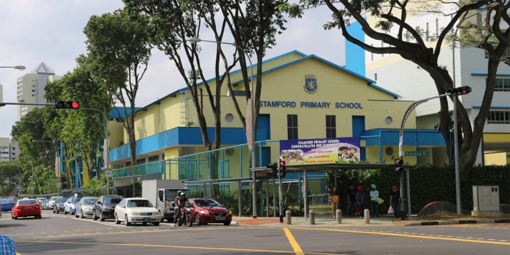
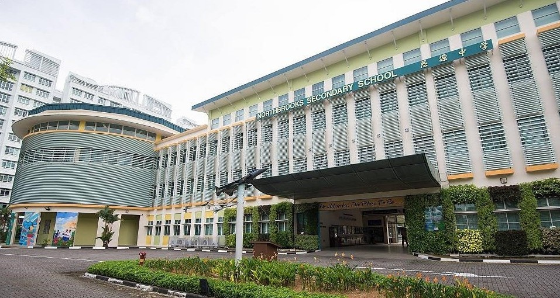
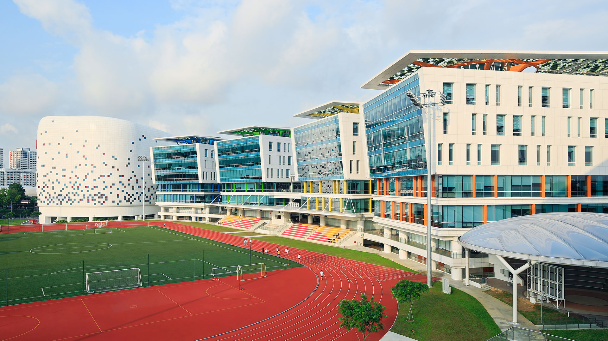

My Current and Past Education

Primary School: Stamford Primary School
During primary school my CCA was NCDCC (National Civil Defence Cadet Corps).
I Finished my PSLE but didn't get very good score so i was mostly only able to get into NT for secondary school.

Secondary School: Northbrooks Secondary School
During Secondary School, I was in NT Level, I don't know why I join another uniform group CCA in secondary school but I did and it was NCC (National Cadet Corps).
My studys was quite good in secondary school and I mostly am in the top 3 overall throughout my secondary school. I finished my N level with a very good score which allow me to choose from lots of choice in ITE.

Post Secondary School: ITE College Central
I went to ITE College Central for 3 years. 2 year in Nitec infocommunication and system administrator and 1 year in IT system and network. When i was studying in Nitec I joined the library club as my CCA.

Currently studying: Nanyang Polytechnic
So currently I am studying in Nanyang Polytechnic to get a diploma in game development and technology.